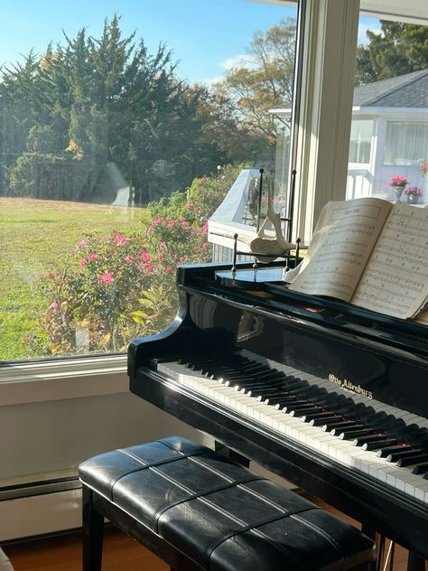
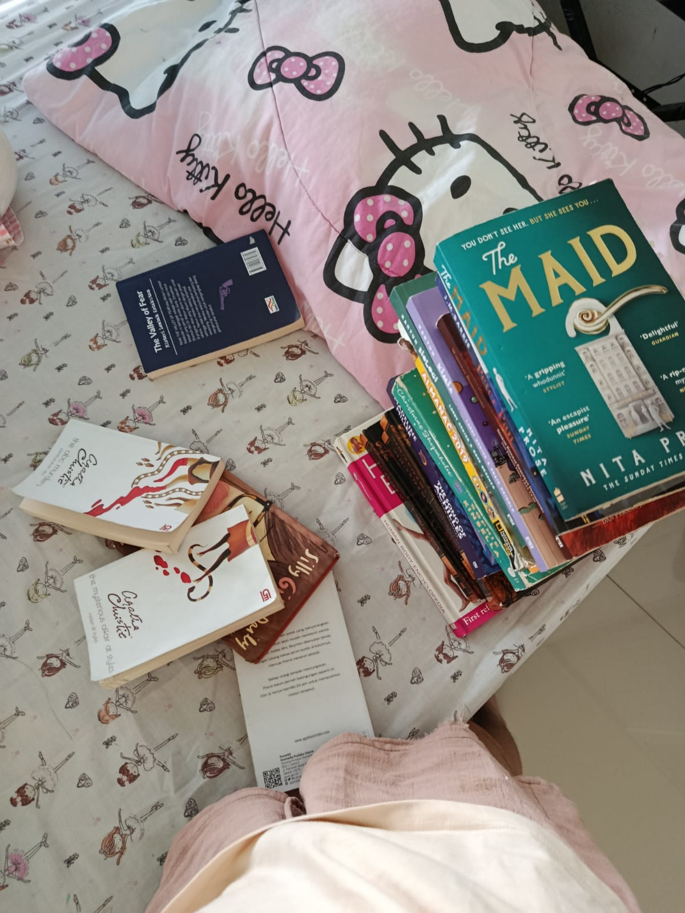
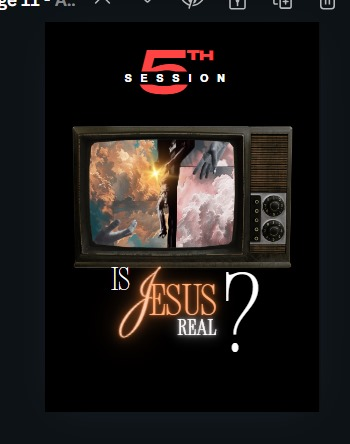
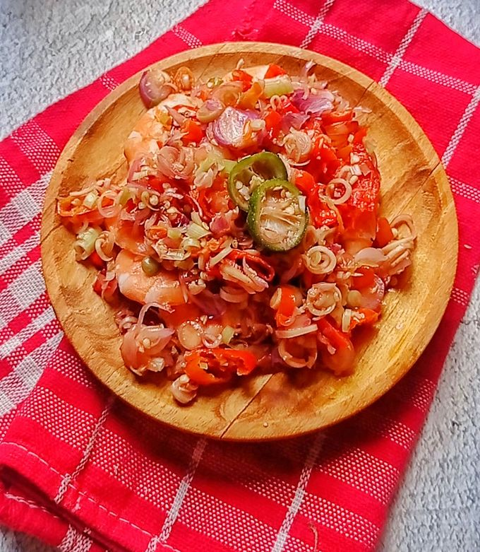
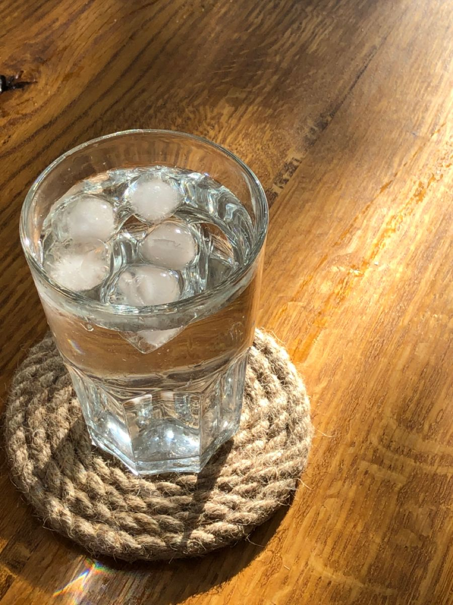

about me !
Saya adalah siswa yang gemar bermain musik, mendesign dan senang membaca buku berikut adalah penjelasan lebihh dalam terkait dengan ketertarikan saya



Saya adalah siswa yang gemar bermain musik, mendesign dan senang membaca buku berikut adalah penjelasan lebihh dalam terkait dengan ketertarikan saya



Saya memiliki kegemaran dalam bidang seni. sya dari umur 6 tahun telah belajar bagamiana cara bermain piano. saya juga aktif dalam mengikuti berbagai macam pelayanan di gereja yang berhubungan dengan seni seperti deign , musik dan mebuat event dan acara

Udang sambal matah adalah salah satu hidangan khas Indonesia yang terkenal dengan rasa segar, pedas, dan aromatik. Hidangan ini berasal dari Bali, di mana sambal matah sering digunakan sebagai pelengkap berbagai makanan laut.

adalah air mineral karena itu adalah minuman yang biasa saya minum setiap harinya

GO VISIT THIS WEBSITE !
Sekolah Santa Laurensia merupakan sekolah yang dikenal dengan pendidikan berkualitas dan pengembangan karakter siswa. Sekolah ini menekankan keseimbangan antara akademik, kreativitas, serta kegiatan olahraga.
Melalui berbagai program pendidikan dan kegiatan ekstrakurikuler, Santa Laurensia membantu siswa untuk berkembang secara intelektual, sosial, dan spiritual.
GO VISIT THIS WEBSITE !
BPK PENABUR adalah salah satu lembaga pendidikan Kristen di Indonesia yang memiliki komitmen untuk memberikan pendidikan berkualitas serta membentuk karakter siswa berdasarkan nilai-nilai Kristiani.
Melalui berbagai program akademik, kegiatan ekstrakurikuler, serta pengembangan karakter, BPK PENABUR berupaya mempersiapkan siswa menjadi pribadi yang unggul, berintegritas, dan siap menghadapi tantangan masa depan.